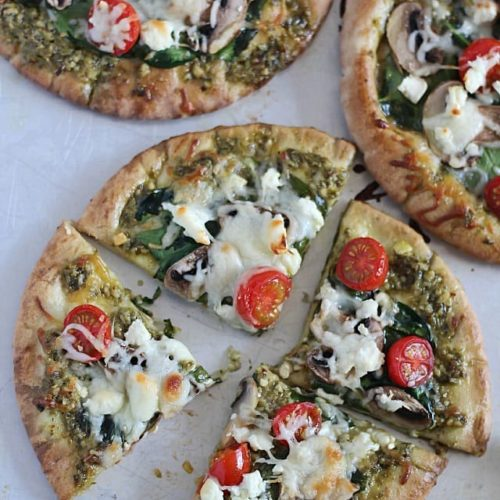

Mediterranean Pesto Pizza

Description
This pizza is great for those who want a change from ordinary pizza. It is great with naan or Greek pita flatbreads!
Ingredients
- 2 tablespoons prepared pesto
- 2 (6 inch) Greek pita flatbreads
- ½ cup feta cheese
- 2 small tomatoes, chopped
- 8 pitted Kalamata olives
Steps
- Preheat oven to 350 degrees F (175 degrees C).
- Spread pesto onto each pita; top with feta cheese, tomatoes, and Kalamata olives. Place each pita onto a baking sheet.
- Bake in the preheated oven until cheese is melted, 6 to 8 minutes.
Nutrition Facts
- 440 calories
- 17.3g protien
- 36.4g carbohydrates
- 25.2g fat
- 61.1mg cholestrol
- 1339.2mg sodium